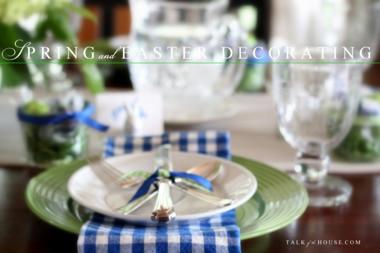
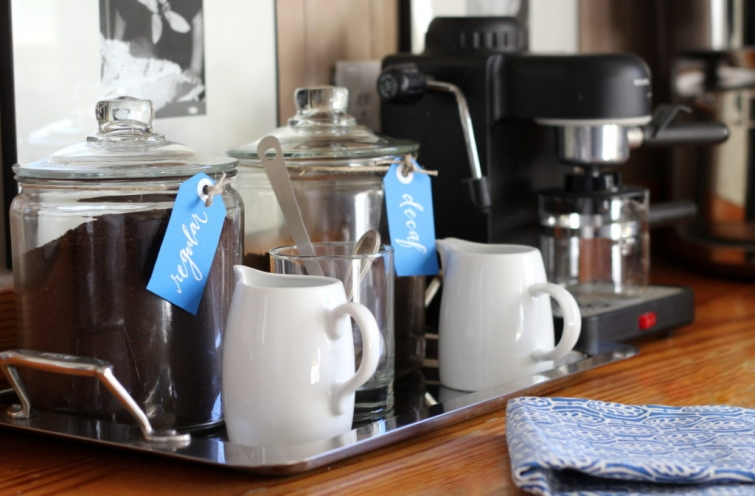

.png)
.PNG)
.PNG)
.PNG)
.PNG)
.PNG)
.JPG)
.JPG)
.PNG)
.PNG)



We have had our share of storms here in Georgia this week, but those gray clouds always give way to the bluest of blue skies afterwards. And good grief at the explosion of green outside! The grass…the shrubs…the trees!

All the rain seems to have washed away that film of yellow pollen that blankets everything here during springtime in the South, and we are left with bright vivid colors after those storms. So with all those blues and greens running rampant in nature outside, it is no surprise then that the same colors are marching right on into the rooms inside our home this season.

You saw them in the foyer and family room in the last post. Let’s take a look around to see where they are popping up in the kitchen and dining area today. Green plaid drapes in the kitchen with just a few pops of blue in the tea towel, a planter, and bags of Lady Grey tea…
 Assorted green and blue cookbooks…
Assorted green and blue cookbooks…
(I’m so glad the Barefoot Contessa cookbooks are published in such bright colors. 😉 )

A green colander and notebook, a blue plate and another blue planter, and more cookbooks add the colors to the space with the kitchen desk.

And just in case you need a recipe for your Easter deviled eggs, here’s the one from the chalkboard. I actually add a bit of sweet pickle relish to mine when I make them, but this was the closest recipe to the one in my head that I could locate in a cookbook.

Blue party napkins and green doilies in the cake stand are over by the plate rack.

And now let’s take a look in the dining area.
I spy some blue and green there too.

Our grocery store had bunches and bunches of those pale green hydrangeas, and I could not resist them. (A few bouquets just might have hopped in my cart and come home with me. 🙂 ) I loosely arranged some of the blooms in a small blue basket from Target’s Easter aisle.

For this table setting, I used my blue checked napkins, (from Sur la Table a few years back) white salad plates, (Williams Sonoma pantry) green dinner plates, (Dollar Tree) and our bubble glass goblets (available from Amazon here.)

I’m not 100% sure, but I think the little bunny place card holders came from Target last year (or maybe the year before?) A ribbon tied small mason jar with paper grass and blue and green wrapped candies makes an easy and colorful Easter treat.


And here’s the whole she-bang. 🙂


Or……..
I could pull out my old blue Spode plates and use them.

The colors worked well together, but for some reason I just didn’t like it as much as the plain white plates there. (Probably because I am such a plain-Jane.) Which version do you like better?

(I know you all are going to choose the blue plates.)
We can munch on Chex mix and cookies while we discuss it and decide. 🙂

And guess what! The back porch has blue and spring-green all over it too.
(You would have never guessed. Right? 🙂 )
Gabbie and I will share that space with you in the next post.

(She’s excited for you to see it!)
Until next time…


.PNG)
and how could I forget to add that Gabbie looks absolutely adorable! Her face is so expressive … such a loveable puppy!
——————————————————————–
Thank you Rosemary! We think she is pretty cute and special too. 🙂
Kelly
Hi Kelly …only time for a quick comment as we’re travelling at the moment! Great post! 🙂 Just wanted to say that while I really like blue and green together and I love your blue plates! I much prefer the white plates as part of the table setting! Like you, I’ll always go for plain …it looks fresh and modern 🙂
Rosemary
——————————————————————–
Thank you for your input Rosemary! Fresh and modern is always the direction I want to go! So maybe that is why I liked the white plates too. 🙂
Safe travels to you!
Kelly
I have to go with the Spode plates because I love pattern mixing! I’m loving the blue and green candies in the jars. I have to ask — do you decide on a color theme and then go shopping for anything in those colors or find something in a store that inspires you & then go with it?
——————————————————————
I think the Spode plates ended up with more votes than the white. I think a lot of people like mixing patterns…that is where I am not so brave.
Great question on my decorating! I usually decide on a color scheme (trying to avoid repeating past color schemes.) Then I pull out everything I have that works with it. Then I go shopping for small items that fill in wherever I need something new. Lately, most of my purchases have simply been fresh flowers. 🙂 But I will say that last year’s Pottery Barn plates were part of the inspiration for the decor last Easter. So that does occasionally happen! 🙂
Kelly
Kelly – You home looks oh-so-lovely! Thanks for sharing with all of us!
If you have a moment, would you mind sharing the type of chalk board markers you use for your adorable board. I am so envious of your ability to create such beautiful lettering! Sigh…..
Thanks! And have a blessed Resurrection Day!
————————————————————————
Hi Cynthia!
I’m so glad you liked the decorating! The markers I mostly use now are the Bistro Chalk Markers. They are much better and easier to work with than real chalk.
Kelly
Kelly,
You made my day, again. Love, love, love the green with white and blue/white checkered napkins! the little rabbit place card holders are adorable and so are the jelly jar “nest”. You have THE best ideas.
Also love your front door wreath … real or faux?
Have a wonderful Sunday.
——————————————————————
I’m so glad I could make your day Monika! I like those blue checked napkins too. (Wish Sur la Table still carried them. 🙁 ) The wreath on the front door is faux. It is a Smith and Hawken one from Target.
You have a happy Sunday too!
Kelly
Kelly,
I love the blue and green combo. I even like the blue and white plates with the green chargers. I must be wild and crazy! 🙂
xo,
Karen
———————————————————————
Thanks Karen! Yes, you must be a wild and crazy girl these days! 🙂 🙂
Kelly
Love your seasonal color palate! The skies were that brilliantly blue here, too, and all the leaves burst forth on the trees seemingly overnight.
I vote for the Spode plates! They add a special something. I’d never have thought to put the Spode with the checks — wish I had your ability to envision and put things together! Also, note to self: I need to put the dollar store on my regular route!
Precious Gabbie, with those soulful eyes — and growing like a weed!
Thanks for sharing it all with us, Kelly. Such a lift!
——————————————————————–
Thank you Ruth. I would put checks with any thing, so putting them with the Spode was easy. 🙂 Gabbie is growing like an over-fertilized weed!
Kelly
I love the blue and green together. It is so spring like and so very inviting. I also love the use of the mason jars. I am just starting to decorate for spring, although, we still have snow on the ground. Northeast Washington will be having a late spring this year. Thanks for letting Gabbie get in with the decorating this time. She is beautiful. As usual you have so magically captured the season. Thank you for sharing your home and life with us. I look forward to each and every post.
——————————————————————-
That blue and green really works for spring; doesn’t it Dee? 🙂 I can’t imagine snow this late!! Our son who lives in Washington was hiking in snow last weekend….quite a bit of it actually around the Columbia River Gorge. Thank you so much for reading the post and for taking the time to comment!
Kelly
Kelly, your home is beautiful. You are so talented. Did you make your chex mix? Also, where did you get your rabbits on your table?
——————————————————————–
You are too kind Ann! I didn’t exactly “make” the Chex mix. I “assembled it” from a large bag of the mix + a bag of M&M’s + some nuts. Easy peasy! 🙂 The little rabbits are from Target’s Easter decor from last year.
Have a good weekend!
Kelly
I love visiting your home. You always have such Great but simple ideas. While I do love the blue plates…I would choose the white ones. If you are simply setting a tablescspe…then the Spode dishes. If you are setting the table to dine….then the white ones. The food then becomes the star…personal opinion here. (But I love those Spode dishes!) And those green drapes in the kitchen…swoon! Enjoy your weekend! 😉
——————————————————————
I like your thinking on the plates Donnamae! Makes perfect sense. 🙂
Hope you are having a good weekend.
Kelly
You’re right….I like the blue plates with the green plates! Everything looks so fresh and Spring-like. I’m looking forward to creating my own Easter tablescape and you have inspired me with ideas! Thanks!
——————————————————————
Yes, I thought you all would like the blue better. 🙂 Glad the color combo could inspire you. Have fun with your tablescape!
Kelly
Blue and green-two of my favorites! Not sure that I could decide between the plain white and the Spode, because I love them both…beautiful!
——————————————————————–
Thank you Bonnie. If blue and green are two of your favorite colors then you should like this season’s decorating! Thank you for reading and leaving your kind comment. 🙂
Kelly
I loved seeing the blue and green paired together in your Easter/Spring decorating! Your tables are always so pretty and creative, and you did not disappoint this time, either! I loved both tables, but I am a “sucker” for anything blue & white, so I liked the one with the blue & white plates added! 🙂 Thanks for sharing and for all of the great ideas! Blessings….
——————————————————————–
Another vote for the blue and white Spode plates! I knew you all would like them. 🙂 Glad you liked seeing the tablescape in the post. Thank you for visiting the blog Lanita!
Kelly
With respect to the blue versus white plates, I’d mix it up and go every other plate so one blue then one white then one blue! Love the green and blue theme. I’m going to copy it for Fathers Day and incorporate a golf theme with it. Beautiful as always.
—————————————————————-
Well that’s an idea I hadn’t thought of Marlene! A good one. I just might give that a try! I also think the color scheme will work great for your golf themed Father’s Day table. Hope you are having a wonderful weekend!
Kelly
Kelly,
I love all of the green and it looks so nice paired with the blue but Gabbie steals the show every time! She is so sweet! Thanks for sharing! I can’t wait to see what’s next! Take care.
Dawn
——————————————————————–
Gabbie says a big thank you Dawn! She seems to steal all the attention around here as well! LOL Thanks for reading and leaving your comments here. 🙂
Kelly
I love it all, Kelly! Blue and green are so appropriate, and they are two of my favorite color combos. Your table is lovely either way, but the Spode is to die for! And….every time I see your drapes I have to fight that covet urge! Truly the bomb!! But I guess you know, Gabby steals the show!! Thank you for sharing. Happy weekend!
——————————————————————-
Thank you for all your sweet comments here Sherry! I’m so glad you liked the spring color scheme, the tables, and Gabbie’s appearance in the post. Thanks for stopping by the blog and giving your input on the table choice! 🙂
Kelly
I love your home! Very inviting! Simplistic, not cluttered, and very beautiful!
—————————————————————–
Gosh what a sweet compliment Sandy. Thank you!! 🙂
Kelly
Everything looks beautiful! I think I would probably go with the white plates too but both options look wonderful. I always like your red but this is perfect for spring. Wish I could meet Gabbie! She looks totally lovable! Look forward to seeing more of her next time.
———————————————————————
Yay! A vote for the white plates! LOL I have used red before in the spring, but I thought the blue and green was a nice change. (But you know red will be back pretty soon.) Gabbie would love to meet you (as long as you have snacks!)
Thanks for visiting the blog today Gwen!
Kelly
Love the blue and green combo. And Gabbie, what a cutie. She has grown so much.
——————————————————————–
Thank you Jayne! Yes she is growing right before our eyes. 🙂
Kelly
Everything looks so fresh and pretty! I like both plates but am going with the blue.
As one reader noted, it adds depth to the setting. I just appreciate the time you take to create and share your lovely home with us. I look forward to each time you post. Thank you!
——————————————————————
Another vote for the blue! Thank you for your input Nancy. I appreciate you for taking the time to read and comment!
Hope you are having a good weekend. 🙂
Kelly
I like the white dishes, but those Spode are pretty! The deviled eggs are very yummy with sweet pickle relish – that’s how we make them.
Enjoy your day and hugs to Gabbie – she is a cutie!
———————————————————————-
I think the white ones make the silver show up better. Maybe that is why I like them better. Thanks for your opinion on the table setting. Yum to the deviled eggs! Gabbie has been going strong since 5:45 this morning with a very short nap this afternoon. I’m tired!
Kelly
Actually, I love both place settings!! The blue looks more formal and pops with color. I am amazed every time how color makes it look so different. And what a great photo of Gabbie! Hoping the weather has calmed down and spring can linger awhile. My daughter’s favorite holiday is Easter and she always looks forward to the season. Hope you and your family have a blessed family gathering. 💕🙏💕🐇🐣🌷🐝🦋✝️🌈
———————————————————————
That blue does look more formal, doesn’t it?! Color really does make such a difference in the look of a space to me too.Thank you for Gabbie’s compliment. 🙂 The weather has most certainly calmed down and is beautiful now. How fun that your daughter loves Easter so!
Hope you are having a good weekend Louvina!
Kelly
I seriously could not wait for you to post this when I saw the blue and green picture on Instagram. Those are my colors and it is so pretty. Can’t wait to see more of what you and Gabbie put together on the porch. I love the white plates and they are very pretty and simple, but yes, I am loving those blue Spodes with the green. That needs to go in the next issue of Southern Lady magazine.
So cute Kelly.
———————————————————————–
Well I am so glad you liked the color combo Sandy! Too funny about going in the next issue of Southern Lady (but thank you for the compliment!)
Have a great weekend!
Kelly
Love how refreshing the green and blue look together. I like the look of the white plates best! Hope you have a wonderful weekend. Your posts are always like having coffee with a friend.
——————————————————————-
Yay! Another vote for the white plates. 🙂 Thank you for the very sweet compliment Donnie. “Coffee with a friend” a high compliment in my book!
Hope your weekend is going great!
Kelly
I think the blue Spode plates are too busy on the napkins, prefer the white ones. Maybe if the plaid napkin was under the green plate, or the napkin was white, I would like it better. And I really am surprised at my choice because I love blue and white dishes.
——————————————————————
Exactly! That may be why I liked the white ones there better. I should have tried it with our white napkins (but I really wanted to use those blue checked ones. 🙂 ) Thank you so much for your input Martha!
Kelly
I love your blue and green…it looks so Springy! Personally, I like the white plates better with the green. The Spode is beautiful though! Your Easter table will be very inviting! A hint for the deviled egg recipe…when you have it all mixed, put the egg filling in a zip lock bag, squeeze the air out of it and zip it closed (very well! Snip a small hole in one corner (this acts as a decorating bag). Pipe the filling in the egg whites and you have pretty deviled eggs! I’m looking forward to Gabbie’s input…she’s a cutie!
———————————————————————
Glad you liked all the decorating Bobbie! And thank you for the helpful hint for filling those high maintenance deviled eggs. That will make them much more attractive!
Kelly
Love your blue and green theme! Those blue Spode plates are perfect and to me, add a beautiful depth to the overall look. Either way, you can’t go wrong!
—————————————————————–
Thank you Elizabeth. Those Spode plates are really too pretty to not use more often. They just seem a lot more “fancy” than my typical style. 🙂
Hope you are having a wonderful weekend!
Kelly
As I have table lamps similar to your, where did you get the so called chandler.
Love the blue and greens. Thank you.
—————————————————————–
Hi Abbie!
The light over the dining room table is made by Visual Comfort. We ordered it from here: http://www.lightingnewyork.com/product/visual-comfort-e-f-chapman-classic-island-lighting-sl5816hab-np.html#que I was tickled to see it used in the dining room of Episode 2 of the new HGTV series Home Town. 🙂
Kelly
Gabbie is so sweet! I love the combination of blue and green together so I was excited when I saw this new post of yours on my feed. So pretty!
Enjoy your weekend!
Shelley
—————————————————————–
Aw thank you Shelley! Gabbie has stolen our hearts! Glad you liked the color scheme for our spring decorating.
Have a great weekend!
Kelly
Gabbie is growing up so fast! She’s a beauty for sure — as is your perfectly lettered chalkboard! If you wrote my death notice on your chalkboard, I’d think it was a thing of beauty!
——————————————————————–
Gabbie is growing sooooo fast! Too funny about lettering your death notice! (but I don’t want to write that. Okay? 🙂 )
Kelly
Kelly I love all of your blue and green. Such a refreshing combo. I like the white plated you had, but I am a plain Jane for sure. Gabbie has grown so much too. Great post as usual.
——————————————————————–
Glad to know I am not alone in my Plain-Jane-ness Donna. 🙂 (And thanks for voting for the white plates!) Gabbie is growing like a weed. Thank you for reading and adding your input here!
Kelly
Love your spring decor! As soon as I saw the Spode blue and white plates..I was like YES this looks so great with the green! Inspiration for me this morning! Thank you! Happy Friday!
Sharon (in Texas)
———————————————————————-
Thank you Sharon…even if you do like the blue plates. LOL I’m glad you liked the spring decor. Hope your weekend is off to a great start!
Kelly
Love the blue and green…it is very Spring. Yes, you are right, probably a lot of us will choose the blue plates, they look so good with the other decorations. Even Gabbie is into this decorating with her checked bandana. Cute.
These storms have been horrible, at one point my hubby hollered for me to get to the basement. The rain was coming in waves here in NE GA. It could be a down pour and then change to a more calm rain. Fickle Mother Nature. My pups are glad that it is over.
——————————————————————
I’m so happy you liked the spring color scheme Cheri. Yes, Gabbie is always with the season in her fashion choices! 🙂
The storms have been scary, and I bet we have not seen the last of them for this season. Your pups sound as scared of them as Gabbie is. Poor things!
Hope your weekend is as beautiful as ours is right now.
Kelly
I love all the blue and green. It’s so refreshing.
I don’t think you’ve shown us some of those angles in your dining room before. I had a layout of your house in my head and now I can see that I was all wrong! Haha!
Love seeing Gabbie!
————————————————————————-
Hi Jill! You are very observant! It is difficult to photograph the dining room because the light source in that room is the door to the porch…which means it is dark. So I have a hard time getting the light right in there. I was lucky to be able to catch it at the right time and photograph it through to the family room – not a shot I have done before. Sorry to mess up your mental floorplan! LOL
Kelly
So pretty and happy looking! I like both plates. Please don’t make me choose! I bet Katrina will pick the blue ones. I love when your posts have numbered parts because that means more in a few days!
——————————————————————–
Thanks Kathy! I won’t make you choose. 🙂 Too funny about the numbered posts! I’ve never thought of it like that. 🙂
Kelly
I love the blue and green color theme. Beautiful blue skies and fresh green grass definite reminders of Spring. Gabbie just keeps getting cuter as she grows.
———————————————————————-
Thank you for your sweet words Karen! The sky and grass this season seems to be quite inspirational! And thank you for Gabbie’s compliment. (She appreciates it. 🙂 )
Kelly
I love the idea of the jelly jars w/ grass & Lindor (?) chocolates! You nailed the colors of wrappers and ribbons on the jars! Great idea. I never decorate for Easter, but did this year because our 10 yr old granddaughter is visiting for spring break. It has really brightened the house! PS: Grateful for including a pic of The Gab!
——————————————————————–
Easy peasy Easter treat for sure (and yummy as well!) I am glad your granddaughter inspired you to decorate for Easter. I know she will enjoy it! Gabbie seems to stay underfoot quite a bit, so she must like being in the photos. LOL
Kelly
Nope. I’m a white plater myself. The Spode is a great contrast though. Beautiful home, Kelly. Welcome Spring 🌱
——————————————————————–
Yay! Another vote for the white plates! Thanks for the sweet comment and the input Libby. 🙂
Happy Spring!
Kelly
Good morning, Kelly. Both the white and the blue work well but I’m leaning toward the blue. Lucky you to have the choice! Enjoy your weekend. Hope it’s all blue skies and sunshine for you.
——————————————————————
Thanks for your opinion Tricia. The blue is pretty…just seems a bit too busy for this plain girl. Yes, indeed, I am lucky to have a choice (and there is still another table setting out on the porch. 🙂 ) We ARE having blue blue skies and sunshine this weekend. Hope you are having a good one as well!
Kelly
Yeah, I have to go with the blue. Okay, Gabbie looks so cute with her gingham scarf. Her doggie face!! Your table is perfect as always!! Love it!!
———————————————————————-
Thanks for all your kind words Patty! Hope you are having a good weekend!
Kelly